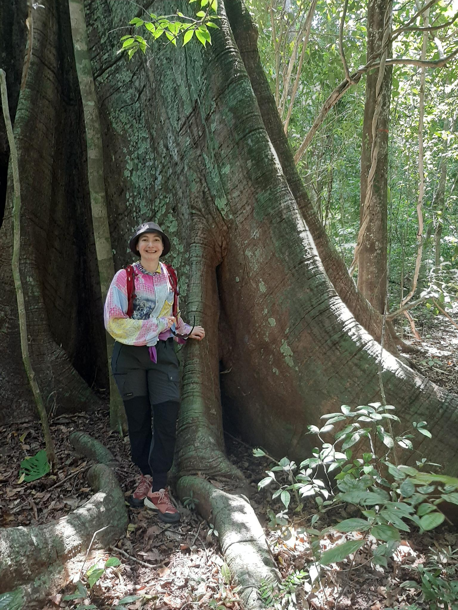

Stuff I’m interested in:
Analysing ecology data.
Bayesian (& frequentist) statistics.
Ecotoxicology.
Handling multiple data type.
High performance computing.
Model development & statistical inference.
Movement ecology.
(R) programming.
Reproductibility.
Spatial statistics.
Teaching.
(Tropical) forests.
Upscaling biological levels from individual to landscape.
Some info
Research engineer at IRD Institute of Research for Development since 2023, based in Montpellier, France.
AMAP lab botAny and Modeling of Plant Architecture and vegetation, POLIS Computing for science
Member of ISI IRD Network for informatics in research, LiStat International Research Network for Life Statistics
Some of my current activities
Publication list (incl. work in progress)
D. Lamonica, A. Bailly, …, M. Réjou-Méchain. BIOMASS R package version 3. In prep.
J. Chave, S. L. Davis, …, D. Lamonica, …, et al. The GEO-TREES initiative: high-accuracy reference data for satellite-derived biomass mapping. In prep.
N. Besson, P. Ploton, D. Lamonica, …, P. Heuret. Beyond evergreen and deciduous: Contrasting canopy maintenance strategies in a Central African rainforest. In prep.
S. Isnard, L. Cheng-Clavel, D. Lamonica and Y. Pillon. Does metal (Ni and Mn) hyperaccumulation shift plant position along the leaf economics spectrum? Submitted to Environmental and Experimental Botany, preprint.
J. Engel, D. Sabatier, …, D. Lamonica, …, et al. Thirty-two years of inventory data (1986-2018) from the GUYADIV forest plot network in French Guiana, covering 100 ha and 90,000 trees. Annals of Forest Science, accepted.
V. Bazile, D. Lamonica, G. Le Moguédec, D. Marshall and L. Gaume. Variable contribution of inquilines to prey digestion in Nepenthes pitcher plants: the role of pitcher traits. Phil. Trans. R. Soc. B, 2026.
D. Lamonica, L. Charvy, D. Kuo, C. Fritsch, M. Coeurdassier, P. Berny and S. Charles. A brief review on models for birds exposed to chemicals. Environmental Science and Pollution Research, 2025.
M. Riccardo Di Nicola, …, D. Lamonica, …, J. L. Dorne. The use of new approach methodologies for the environmental risk assessment of food and feed chemicals. Current Opinion in Environmental Science & Health, 2023.
D. Lamonica, S. Charles, B. Clément and C. Lopes. Chemical effects on ecological interactions within a model-experiment loop. PCI Ecotoxicology, 2022.
S. Charles, …, D. Lamonica, …, C. Lopes. Generic solving of physiologically-based kinetic models in support of next generation risk assessment due to chemicals. J Explor Res Pharmacol., 2022.
D. Lamonica, F. M. Schurr and J. Pagel. Predicting the dynamics of recently established tree populations: a framework for statistical inference and lessons for data collection. Methods in Ecology in Evolution, 2021.
M. Nagler, N. Praeg, G. H. Niedrist, …, D. Lamonica, …, et al. Abundance and biogeography of methanogenic and methanotrophic microorganisms across European streams. J Biogeogr., 2021.
D. Lamonica, J. Pagel, E. Valdès-Correcher, D. Bert, A. Hampe and F. M. Schurr. Tree potential growth varies more than competition among spontaneously established forest stands of pedunculate oak (Quercus robur ). Annals of Forest Science, 2020.
D. Lamonica, H. Drouineau, H. Capra, H. Pella and A. Maire. A framework for pre-processing individual location telemetry data for freshwater fish in a river section. Ecological Modelling, 2020.
B. Clément and D. Lamonica. Fate, toxicity and bioconcentration of cadmium on Pseudokirchneriella subcapitata and Lemna minor in mid-term single tests. Ecotoxicology, 2018.
D. Lamonica, Capturer les interactions écologiques en microcosme sous pression chimique à travers le prisme de la modélisation, PhD thesis, Ecologie, Environnement. Université de Lyon, 2016
D. Lamonica, B. Clément, S. Charles and C. Lopes. Modelling algae-duckweed interaction under chemical pressure within a laboratory microcosm. Ecotoxicology and Environmental Safety, 2016
D. Lamonica, U. Herbach, F. Orias, B. Clément, S. Charles and C. Lopes. Mechanistic modelling of daphnid-algae dynamics within a laboratory microcosm. Ecological Modelling, 2016